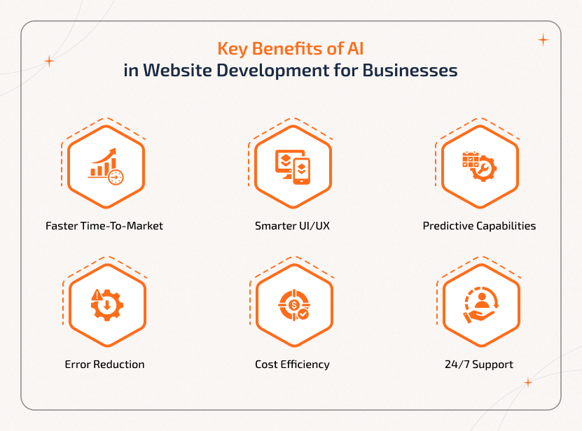
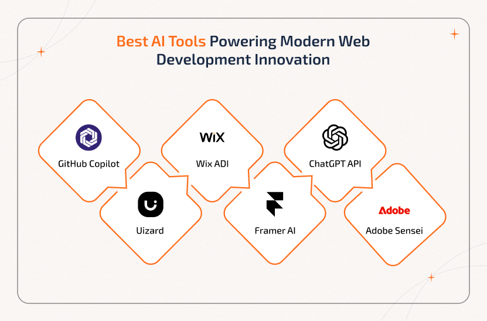
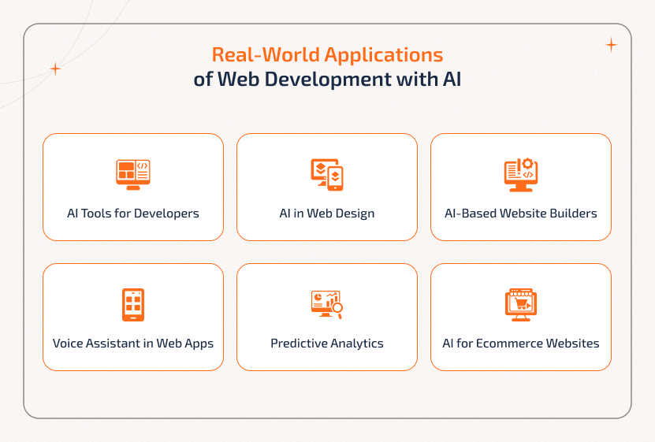
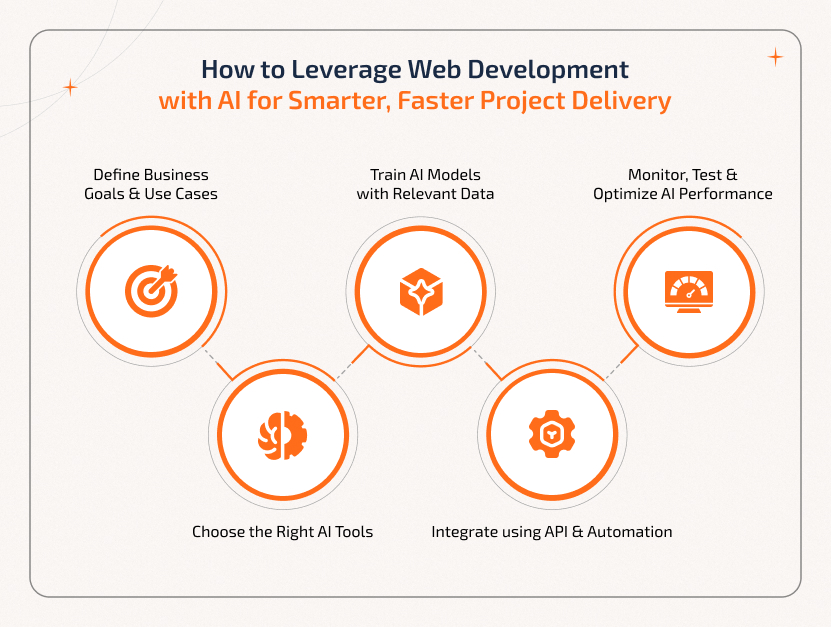
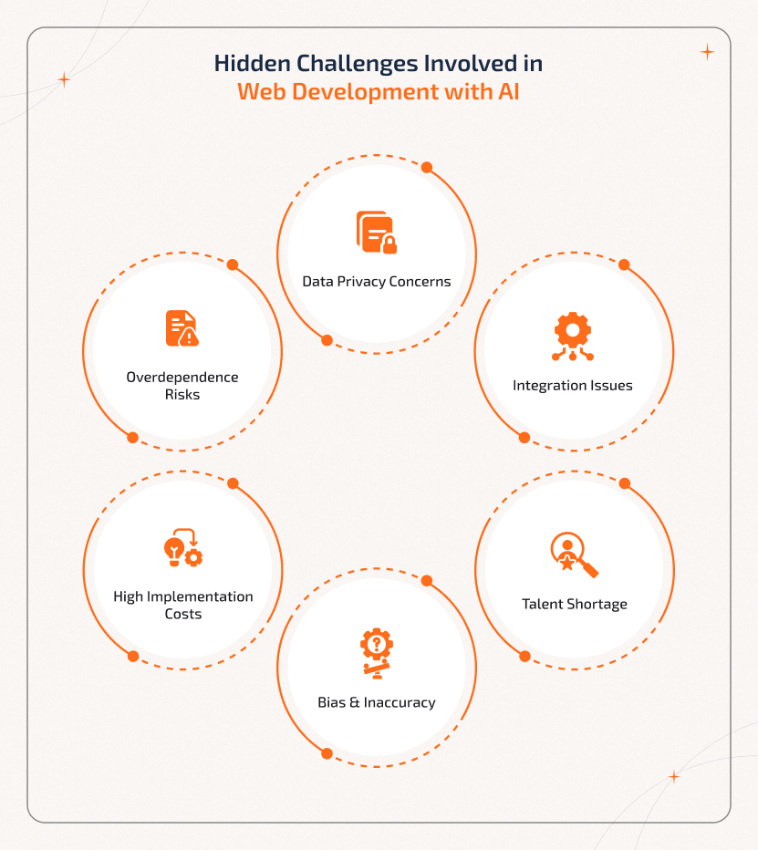
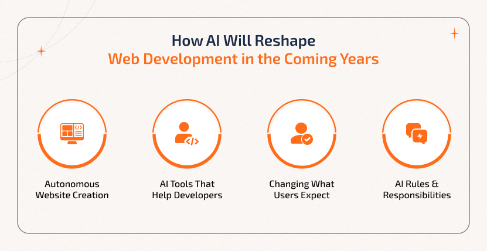

In 2025, businesses started looking at web development with AI as an emerging innovation rather than a necessity. As per the Stanford AI Index, about 78% of global companies use AI in at least one business function, which was just 55% in 2023. Besides, around 71% deploy generative AI for coding or content-related tasks. These are the proofs that show how AI in web development is becoming mainstream and driving business impact, efficiency, and creativity.
Whether you are a CTO, start-up founder, or developer, understanding how AI in website development works not only helps you future-proof your tech stack but also enhances user experiences and boosts ROI.
Why Modern Businesses Are Adopting Web Development with AI
Web development with AI refers to the use of artificial intelligence and machine learning technologies to automate, enhance, and personalize the process of coding, designing, testing, and managing websites or web applications.
Instead of relying on manual programming entirely, developers in the digital era are using AI-powered web development tools that assist in coding, layout design, content optimization, and customer interactions.
Web Development with AI - Why Smart Businesses Are Making the Shift
Undeniably, the competition in the digital space is emerging, and thus, websites are no longer seen as static brochures. Rather, they are seen as living platforms that need to adapt, engage, and convert. With almost three-quarters of companies having started using AI, not investing in AI-based web development means businesses are likely to miss out on faster launches, scalable automation, and insightful personalization. Thus, business owners look at AI-based website development as a strategic asset to enhance conversion, reduce costs, and grow digital ROI.
Key Benefits of AI in Website Development for Businesses

1. Faster Time-To-Market
AI tools automate design, code generation,
fix bugs, and build components in minutes. This saves weeks of development time.
2. Smarter UI/UX
AI helps analyze user behavior and deliver
AI-enhanced web personalization.
3. Predictive Capabilities
ML algorithms provide predictive analytics
for websites and optimize performance.
4. Error Reduction
Automated code suggestions generated by AI reduce
bugs and improve code quality.
5. Cost Efficiency
Automated workflows and no-code/low-code AI-based
website builders lower development costs.
6. 24/7 Support
Intelligent chatbots for websites handle customer
queries without human intervention.
Thus, by investing in AI-based web development, you are not just building a website but also a smart, revenue-focused digital asset.
Traditional Vs AI Web Development - What's the Difference?
| Function | Traditional Development | AI‑Powered Web Development |
|---|---|---|
| Coding Approach | Manual coding, review & upkeep | AI automates layout, code, and maintenance |
| Development Timeline | High dev costs and longer timelines | Web development using AI speeds delivery |
| User Experience (UX) | Static, one-size UX | AI-enhanced personalization for each visitor |
| Error Handling | Reactive bug fixing | Predictive analysis and performance alerts |
The shift means AI for web developers is not just optional, it is becoming the industry standard for building competitive digital products.
Discover how AI speeds up your workflow, cuts costs, and personalizes UX.
How AI is Transforming the Web Development Landscape
AI is transforming every layer of the web development process—from frontend visuals to backend logic and maintenance. Businesses and developers have started using AI to build smarter interfaces, automate complex tasks, and improve code quality without compromising on delivery time.
Earlier, designing a great website took countless hours of tweaking layouts, testing color combinations, and adjusting typography. However, AI in web design has simplified this tedious process by making intelligent suggestions based on user behavior, brand tone, and scalability practices.
Even non-designers and developers are allowed to design using AI tools like Framer AI and Wizard. These tools do the following:
- Auto-generate wireframes and UI mockups even from simple prompts or sketches
- Offer suggestions for optimal layouts, color schemes, fonts, etc., for accessibility and consistency
- Analyze user interaction data and help improve the UX flow dynamically
- Adjust interfaces for mobile, tablet, or desktop using AI for responsive web design
- Run automated A/B tests for layout changes
With all these, businesses can create AI-enhanced, conversion-focused designs with fewer revisions at a faster rate.
AI is not just used for the frontend; it is also used in powering intelligent backend systems that run your entire web infrastructure more efficiently. Using platforms like New Relic AI and Dynatrace Davis, businesses can achieve automated web development with AI on the backend. This way, it ensures faster load times, better user experiences, and fewer outages.
Companies can use AI for backend development to:
- Predict traffic spikes and autoscale server responses
- Monitor performance and fix issues automatically
- Automate data validation, API responses, and caching
- Detect anomalies and security threats dynamically with ML algorithms
- Recommend database indexing and query improvements based on usage patterns
The way in which code is written, reviewed, and fixed is one of the most noticeable shifts in web development using AI. AI-powered tools like GitHub Copilot, Replit AI, Tabnine, etc., assist developers with the following:
- Autocomplete code based on context and learned patterns
- Recommend entire functions, database queries, or component structures
- Dynamically highlight bugs, logic errors, or unused code
- Refactor unclear code into cleaner, more efficient structures
- Automatically write unit tests or documentation
As per reports, developers using Copilot complete tasks up to 55% faster, and over 30% of AI-assisted code in production comes from AI generation.
Thus, all these tools reduce human errors, speed up development cycles, and help teams build more powerful web applications with minimal resources
Best AI Tools Powering Modern Web Development Innovation
Some of the powerful and best AI tools for developers and designers are as follows, with respective use cases:

1. GitHub Copilot AI coding assistant for faster, cleaner code
2. Uizard Turns wireframes into code using ML
3. Wix ADI AI website builder for quick deployment
4. Framer AI Design-first web builder with generative AI
5. ChatGPT API Powers AI-based chatbot development
6. Adobe Sensei Automates design intelligence and media handling
These are the tools that support both frontend and backend innovation, thus making web development using AI scalable and accessible.
Advanced AI Tools That Supercharge Web Development Performance
In the digital-first era, users are expecting fast, secure, and personalized digital experiences. That's when web development with AI goes beyond the basics and empowers businesses with cutting-edge intelligence. This includes:
1. AI-Powered A/B Testing
No more guesswork. Modern AI tools can run and
evaluate multiple variants at once. It automatically chooses the best-performing
version to improve leads, sales, or sign-ups.
2. Performance Optimization
AI enhances website speed and responsiveness
by adjusting code, caching, and server loads automatically with respect to real-time
traffic and usage data.
3. Heatmaps & Behavioural Analytics
AI-generated heatmaps show how users
interact with your site by showing patterns and friction points. This way, you can
boost user experiences and increase conversions.
4. Cybersecurity Built with AI
AI powers your web apps with real-time
threat detection, anomaly monitoring, and automated responses to evolving cyber
threats.
Faster Web Development with AI?
Harness AI to build faster, design better, and enhance user experiences.
Real-World Applications of Web Development with AI
Check out how AI and ML in web development are used across industries:

1. AI Tools for Developers
Developers have started embracing AI development tools for web apps like GitHub
Copilot, Tabnine, etc., for web apps as they autocomplete code, debug errors, and
write better code faster.
2. AI in Web Design
Sensei and Framer AI are tools that analyze user
behavior to recommend layouts and visuals. Artificial intelligence in web design
ensures a clean, conversion-focused aesthetic across devices.
3. AI-Based Website Builders
Wix ADI, Zyro, etc., are platforms that use
AI for web development to develop ready-to-launch websites by answering a few
questions. Thus, they are perfect for non-tech users and start-ups.
4. Voice Assistants in Web Apps
With the help of NLP, websites can now
build voice-based navigation or assistants. Voice assistants in web apps improve
accessibility and convenience.
5. Predictive Analytics
By tracking user behavior, AI web applications
predict trends, recommend changes, and even adjust content dynamically for higher
engagement.
6. AI for eCommerce Websites
From product
recommendations to smart search, AI for eCommerce websites improves customer
journeys, boosts sales, and reduces cart abandonment.
AI-Driven Full-Stack Development from Interface to Infrastructure
AI-powered full-stack development is transforming the way modern web applications are built, scaled, and optimized. No matter if you are designing a simple interface or managing complex backend operations, AI technologies enable faster development, better performance, and smarter automation.
Check out how AI in website development is transforming full-stack workflows:
Modern frontend development is all about doing repetitive tasks such as creating UI components, managing layout responsiveness, adapting themes for different devices, etc. With AI in frontend development, those tasks are automated to:
- Generate complete HTML/CSS/JS code from wireframes or natural language prompts
- Adjust layout and typography in real-time based on screen size & user behavior
- Predict and implement data-driven design improvements via real-time analytics
- Auto-optimize performance for faster page loads and smoother animations
- Integrate accessibility features by default using intelligent design assistants
It is to be noted that tools like Framer AI and TeleportHQ offer faster delivery of user-facing experiences without compromising on quality.
Backends are becoming AI-augmented decision engines. With platforms like Base44 and Coherence AI, web developers get the chance to offload much of the logic-heavy lifting to intelligent agents. This ensures high availability, speed, and flexibility. Here's how it works today:
- Generate API endpoints automatically based on data models or user intent
- Use AI to recommend business logic flows and microservice architecture
- Improve backend performance through automated testing and load balancing
- Apply AI to detect latency, bottlenecks, or scaling issues before they affect UX
- Secure APIs with anomaly detection and threat modeling powered by ML
As web apps grow more complex, machine learning in web development is becoming vital for delivering personalized, data-rich experiences at scale. ML models can be used to:
- Predict user behavior and customize content using live data streams
- Detect fraud or anomalies in transactions and logins
- Improve recommendation engines (e.g., products, content, learning modules)
- Enable natural language queries and voice interfaces via integrated NLP
- Visualize trends in dashboards via AI-interpreted analytics
Whether you are building eCommerce platforms, finance portals, or SaaS dashboards, ML-powered AI web applications provide real-time intelligence that cannot be matched by manual coding.
How to Leverage Web Development with AI for Smarter, Faster Project Delivery
Implementing web development with AI not just requires tools, but it also needs the right strategy, data, and execution. As per the 2025 Tech Radar report, more than 68% of businesses that handle web development using AI have witnessed faster deployment and reduced costs in digital products. Check out how to apply AI to real-world web development projects:

1. Define Business Goals & Use Cases
Begin by identifying where AI can
add value to your existing platform. Decide if you want faster UI prototyping or an
AI chatbot for customer support, or are looking to automate testing or performance
monitoring. Clarifying these objectives at the first stage helps in selecting the
right AI applications for your website development.
2. Choose the Right AI Tools
Based on the project needs, you shall choose
AI-based website builders, AI design tools, code assistants, and AI integration
platforms. With these, you will be able to streamline AI-powered web development
from the frontend to the backend.
3. Train AI Models with Relevant Data
In this stage, you need to choose
advanced use cases like recommendation engines or smart content personalization. For
this, you shall use machine learning for web development with domain-specific data,
pre-train models on customer inputs or behavioural analytics, and ensure your AI
model aligns with your privacy regulations. This acts as a key for data-driven web
interfaces and intelligent UX.
4. Integrate using API and Automation
Now, you shall connect your AI into
your tech stack through pre-built APIs, automation tools, and low-code or no-code
platforms. This approach supports scalable, AI-based web development even for
non-technical teams.
5. Monitor, Test & Optimize AI Performance
Proper
monitoring is essential after deployment. This includes tracking model accuracy,
speed, and user feedback. AI can be enhanced using A/B testing tools, and the
training datasets can be adjusted regularly. This continuous loop ensures
sustainable AI integration in websites.
How to Accelerate Web Development With AI-Powered Low-Code Platforms?
AI is creating impacts in low-code and no-code platforms by enabling businesses to build powerful websites and apps without needing deep programming skills.
- Drag & drop builders with AI-generated layouts
- Use natural language prompts & offer smart content suggestions
- Real-time code generation for custom components
- Automated QA testing and bug detection
- Built-in AI chatbots, forms, and workflows
- Faster prototyping with minimal usage of resources
Thus, businesses can partner with a low-code/no-code development company that combines AI expertise with full-stack support. This approach is ideal for SMBs, start-ups, and non-technical teams looking forward to launching MVPs or internal tools rapidly, with AI handling the complex tasks.
How AI Supercharges Progressive Web App Development
As web development with AI evolves, integrating AI into PWA opens up smarter, more responsive, and personalized digital experiences across devices. Thus, developers can deliver offline-first, hyper-personalized web experiences that boost engagement and retention. Perks of using PWA with AI include:
1. Enhancing Offline Capability with AI
2. Offering Personalized User Experience
3. Smarter Push Notifications
Hidden Challenges Involved in Web Development with AI
While AI is making an incredible transformation in web development with great speed and efficiency, it does involve lots of challenges. From data security to integration complexity, businesses and developers face lots of challenges when implementing AI-powered solutions into websites and applications. The most common challenges in AI-driven web development are listed down:

1. Data Privacy Concerns
AI Systems should comply with laws like GDPR and
maintain secure data pipelines to ensure user data is protected.
2. Integration Issues
Legacy systems are not often compatible with modern
AI tools often and they require extra effort.
3. Talent Shortage
There’s a talent gap in AI and machine learning. Thus,
finding skilled AI developers remains a challenge.
4. Bias & Inaccuracy
AI models can generate biased or inaccurate results
if trained on flawed or limited data, leading to incorrect predictions or UX.
5. High Implementation Costs
Training, integrating, and maintaining AI
systems can be expensive, especially for complex web applications.
6. Overdependence Risks
Relying too much on AI tools
for code generation can reduce code quality without human review.
AI Trends Shaping the Future of Web Development
The future of web development and AI integration is becoming smarter, faster, and offering more human-like digital experiences. As per McKinsey's 2025 digital report, 78% of web-first businesses are looking forward to integrating AI to stay ahead of the competition. The leading shift includes:
1. Conversational Interfaces & AI Chatbots
2. Predictive UI Personalization
3. Voice Search Optimization
4. AI-Powered Analytics & Conversion Rate Optimization
5. Real-Time Content Generation
How AI Will Reshape Web Development in the Coming Years - A Closer Look
AI is not just helping with handling small tasks in web development. Rather, it is starting to change how entire websites are planned, built, and improved. Hence, you can expect the future to look like:

1. Autonomous Website Creation
AI tools will build websites
on their own that cover everything from choosing layouts, writing content, and
making changes based on what users need. Thus, it doesn't look for constant input
from developers.
2. AI Tools That Help Developers
AI will be all set to work
like an assistant for developers by helping with writing code faster, fixing bugs,
and providing suggestions for better ways to build websites.
3. Changing What Users Expect
Since users are looking for
websites that feel personal, fast, and smart, AI may help meet these expectations by
learning what users like and making websites adapt to them in real-time.
4. AI Rules & Responsibilities
As AI takes up a
bigger role in web development, it is important to follow rules around privacy,
transparency, and fairness to ensure users' privacy and security.
Why Choose Sparkout for Smart, Scalable Web Development with AI?
At Sparkout , we don't just build websites, we engineer intelligent digital experiences powered by AI. Our team of experts with robust design and development experience leverages advanced technologies like GPT, computer vision, and predictive analytics to deliver websites that can adapt, convert, and grow with your business.
If you are building a new product or upgrading your existing platform, our AI-powered web development services help you:
- Automate repetitive tasks & minimize manual effort.
- Offers personalized user journeys in real-time.
- Uses AI-powered insights to boost SEO & performance.
- Detecting and resolving UX or security issues.
- Accelerate development with low-code AI tooling.
- Scale with confidence across platforms & devices.
Partner with us to develop scalable, intelligent web platforms for your modern business growth.
Final Words - Is Your Business Ready for AI-Based Web Development?
AI is not just enhancing web development; it is redefining it. Whether you are looking for faster deployment, smarter personalization, or creating predictive UX and self-optimizing sites, AI-based web development offers businesses a critical edge in today's digital race. Embrace AI if you are aiming for rapid growth, intelligent customer engagement, or scalable infrastructure.